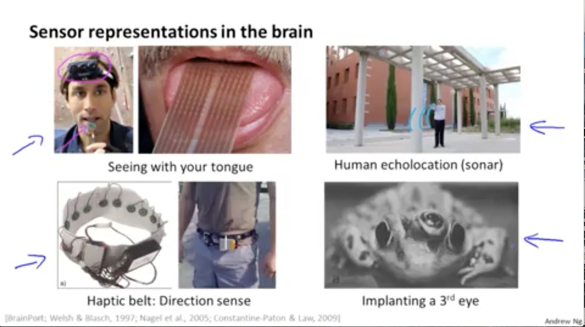

Hypothesis is that the brain has a single
learning algorithm
Evidence for hypothesis
1. Auditory cortex --> takes sound signals
If you cut the wiring from the ear to the auditory
cortex
Re-route optic nerve to the auditory cortex
Auditory cortex learns to see
2. Haptic belt direction sense
Belt which buzzes towards north
Gives you a sense of direction
